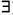

(cond1 AND cond2) is TRUE if both (cond1) and (cond2) are TRUE; otherwise, it is FALSE.
(cond1 AND cond2) is TRUE if both (cond1) and (cond2) are TRUE; otherwise, it is FALSE.
In this chapter we discuss the two formal languages for the relational model: the relational algebra and the relational calculus. In contrast, Chapters 4 and 5 described the practical language for the relational model, namely the SQL standard. Historically, the relational algebra and calculus were developed before the SQL language. In fact, in some ways, SQL is based on concepts from both the algebra and the calculus, as we shall see. Because most relational DBMSs use SQL as their language, we presented the SQL language first.
Recall from Chapter 2 that a data model must include a set of operations to manipulate the database, in addition to the data model’s concepts for defining the database’s structure and constraints. We presented the structures and constraints of the formal relational model in Chapter 3. The basic set of operations for the relational model is the relational algebra. These operations enable a user to specify basic retrieval requests as relational algebra expressions. The result of a retrieval is a new relation, which may have been formed from one or more relations. The algebra operations thus produce new relations, which can be further manipulated using operations of the same algebra. A sequence of relational algebra operations forms a relational algebra expression, whose result will also be a relation that represents the result of a database query (or retrieval request).
The relational algebra is very important for several reasons. First, it provides a formal foundation for relational model operations. Second, and perhaps more important, it is used as a basis for implementing and optimizing queries in the query processing and optimization modules that are integral parts of relational database management systems (RDBMSs), as we shall discuss in Chapter 19. Third, some of its concepts are incorporated into the SQL standard query language for RDBMSs.
Although most commercial RDBMSs in use today do not provide user interfaces for relational algebra queries, the core operations and functions in the internal modules of most relational systems are based on relational algebra operations. We will define these operations in detail in Sections 6.1 through 6.4 of this chapter.
Whereas the algebra defines a set of operations for the relational model, the relational calculus provides a higher-level declarative language for specifying relational queries. A relational calculus expression creates a new relation. In a relational calculus expression, there is no order of operations to specify how to retrieve the query result—only what information the result should contain. This is the main distinguishing feature between relational algebra and relational calculus. The relational calculus is important because it has a firm basis in mathematical logic and because the standard query language (SQL) for RDBMSs has some of its foundations in a variation of relational calculus known as the tuple relational calculus.1
The relational algebra is often considered to be an integral part of the relational data model. Its operations can be divided into two groups. One group includes set operations from mathematical set theory; these are applicable because each relation is defined to be a set of tuples in the formal relational model (see Section 3.1). Set operations include UNION, INTERSECTION, SET DIFFERENCE, and CARTESIAN PRODUCT (also known as CROSS PRODUCT). The other group consists of operations developed specifically for relational databases—these include SELECT, PROJECT, and JOIN, among others. First, we describe the SELECT and PROJECT operations in Section 6.1 because they are unary operations that operate on single relations. Then we discuss set operations in Section 6.2. In Section 6.3, we discuss JOIN and other complex binary operations, which operate on two tables by combining related tuples (records) based on join conditions. The COMPANY relational database shown in Figure 3.6 is used for our examples.
Some common database requests cannot be performed with the original relational algebra operations, so additional operations were created to express these requests. These include aggregate functions, which are operations that can summarize data from the tables, as well as additional types of JOIN and UNION operations, known as OUTER JOINs and OUTER UNIONs. These operations, which were added to the original relational algebra because of their importance to many database applications, are described in Section 6.4. We give examples of specifying queries that use relational operations in Section 6.5. Some of these same queries were used in Chapters 4 and 5. By using the same query numbers in this chapter, the reader can contrast how the same queries are written in the various query languages.
In Sections 6.6 and 6.7 we describe the other main formal language for relational databases, the relational calculus. There are two variations of relational calculus. The tuple relational calculus is described in Section 6.6 and the domain relational calculus is described in Section 6.7. Some of the SQL constructs discussed in Chapters 4 and 5 are based on the tuple relational calculus. The relational calculus is a formal language, based on the branch of mathematical logic called predicate calculus.2In tuple relational calculus, variables range over tuples, whereas in domain relational calculus, variables range over the domains (values) of attributes. In Appendix C we give an overview of the Query-By-Example (QBE) language, which is a graphical user-friendly relational language based on domain relational calculus. Section 6.8 summarizes the chapter.
For the reader who is interested in a less detailed introduction to formal relational languages, Sections 6.4, 6.6, and 6.7 may be skipped.
6.1 Unary Relational Operations: SELECT and PROJECT
6.1.1 The SELECT Operation
The SELECT operation is used to choose a subset of the tuples from a relation that satisfies a selection condition.3 One can consider the SELECT operation to be a filter that keeps only those tuples that satisfy a qualifying condition. Alternatively, we can consider the SELECT operation to restrict the tuples in a relation to only those tuples that satisfy the condition. The SELECT operation can also be visualized as a horizontal partition of the relation into two sets of tuples—those tuples that satisfy the condition and are selected, and those tuples that do not satisfy the condition and are discarded. For example, to select the EMPLOYEE tuples whose department is 4, or those whose salary is greater than $30,000, we can individually specify each of these two conditions with a SELECT operation as follows:
σDno=4(EMPLOYEE)
σSalary>30000(EMPLOYEE)
In general, the SELECT operation is denoted by
σ<selection condition>(R)
where the symbol σ (sigma) is used to denote the SELECT operator and the selection condition is a Boolean expression (condition) specified on the attributes of relation R. Notice that R is generally a relational algebra expression whose result is a relation—the simplest such expression is just the name of a database relation. The relation resulting from the SELECT operation has the same attributes as R.
The Boolean expression specified in <selection condition> is made up of a number of clauses of the form
<attribute name> <comparison op> <constant value>
or
<attribute name> <comparison op> <attribute name>
where <attribute name> is the name of an attribute of R, <comparison op> is normally one of the operators {=,<,≤,>,≥,≠}, and <constant value> is a constant value from the attribute domain. Clauses can be connected by the standard Boolean operators and, or, and not to form a general selection condition. For example, to select the tuples for all employees who either work in department 4 and make over $25,000 per year, or work in department 5 and make over $30,000, we can specify the following SELECT operation:
σ(Dno=4 AND Salary>25000) OR (Dno=5 AND Salary>30000)(EMPLOYEE)
The result is shown in Figure 6.1(a).
Notice that all the comparison operators in the set {=,<,≤,>,≥,≠} can apply to attributes whose domains are ordered values, such as numeric or date domains. Domains of strings of characters are also considered to be ordered based on the collating sequence of the characters. If the domain of an attribute is a set of unordered values, then only the comparison operators in the set {=, ≠} can be used. An example of an unordered domain is the domain Color = { ‘red’, ‘blue’, ‘green’, ‘white’, ‘yellow’, ...}, where no order is specified among the various colors. Some domains allow additional types of comparison operators; for example, a domain of character strings may allow the comparison operator SUBSTRING_OF.
In general, the result of a SELECT operation can be determined as follows. The <selection condition> is applied independently to each individual tuple t in R. This is done by substituting each occurrence of an attribute Ai in the selection condition with its value in the tuple t[Ai]. If the condition evaluates to TRUE, then tuple t is selected. All the selected tuples appear in the result of the SELECT operation. The Boolean conditions AND, OR, and NOT have their normal interpretation, as follows:
Figure 6.1
Results of SELECT and PROJECT operations. (a) σ(Dno=4 AND Salary>25000) OR (Dno=5 AND Salary>30000) (EMPLOYEE). (b) πLname, Fname, Salary(EMPLOYEE). (c) πSex, Salary(EMPLOYEE).
The SELECT operator is unary; that is, it is applied to a single relation. Moreover, the selection operation is applied to each tuple individually; hence, selection conditions cannot involve more than one tuple. The degree of the relation resulting from a SELECT operation—its number of attributes—is the same as the degree of R. The number of tuples in the resulting relation is always less than or equal to the number of tuples in R. That is, |σc (R)| ≤ |R| for any condition C. The fraction of tuples selected by a selection condition is referred to as the selectivity of the condition.
Notice that the SELECT operation is commutative; that is,
σ<cond1>(σ<cond2>(R)) = σ<cond2>(σ<cond1>(R))
Hence, a sequence of SELECTs can be applied in any order. In addition, we can always combine a cascade (or sequence) of SELECT operations into a single SELECT operation with a conjunctive (AND) condition; that is,
σ<cond1>(σ<cond2>(...(σ<condn>(R))...)) = σ<cond1> AND<cond2> AND...AND <condn> (R)
In SQL, the SELECT condition is typically specified in the WHERE clause of a query. For example, the following operation:
σDno=4 AND Salary>25000 (EMPLOYEE)
would correspond to the following SQL query:
6.1.2 The PROJECT Operation
If we think of a relation as a table, the SELECT operation chooses some of the rows from the table while discarding other rows. The PROJECT operation, on the other hand, selects certain columns from the table and discards the other columns. If we are interested in only certain attributes of a relation, we use the PROJECT operation to project the relation over these attributes only. Therefore, the result of the PROJECT operation can be visualized as a vertical partition of the relation into two relations: one has the needed columns (attributes) and contains the result of the operation, and the other contains the discarded columns. For example, to list each employee’s first and last name and salary, we can use the PROJECT operation as follows:
πLname, Fname, Salary(EMPLOYEE)
The resulting relation is shown in Figure 6.1(b). The general form of the PROJECT operation is
π<attribute list>(R)
where π (pi) is the symbol used to represent the PROJECT operation, and <attribute list> is the desired sublist of attributes from the attributes of relation R. Again, notice that R is, in general, a relational algebra expression whose result is a relation, which in the simplest case is just the name of a database relation. The result of the PROJECT operation has only the attributes specified in <attribute list> in the same order as they appear in the list. Hence, its degree is equal to the number of attributes in <attribute list>.
If the attribute list includes only nonkey attributes of R, duplicate tuples are likely to occur. The PROJECT operation removes any duplicate tuples, so the result of the PROJECT operation is a set of distinct tuples, and hence a valid relation. This is known as duplicate elimination. For example, consider the following PROJECT operation:
πSex, Salary(EMPLOYEE)
The result is shown in Figure 6.1(c). Notice that the tuple <‘F’, 25000> appears only once in Figure 6.1(c), even though this combination of values appears twice in the EMPLOYEE relation. Duplicate elimination involves sorting or some other technique to detect duplicates and thus adds more processing. If duplicates are not eliminated, the result would be a multiset or bag of tuples rather than a set. This was not permitted in the formal relational model, but is allowed in SQL (see Section 4.3).
The number of tuples in a relation resulting from a PROJECT operation is always less than or equal to the number of tuples in R. If the projection list is a superkey of R—that is, it includes some key of R—the resulting relation has the same number of tuples as R. Moreover,
π<list1> (π<list2>(R)) = π<list1>(R)
as long as <list2> contains the attributes in <list1>; otherwise, the left-hand side is an incorrect expression. It is also noteworthy that commutativity does not hold on PROJECT.
In SQL, the PROJECT attribute list is specified in the SELECT clause of a query. For example, the following operation:
πSex, Salary(EMPLOYEE)
would correspond to the following SQL query:
Notice that if we remove the keyword DISTINCT from this SQL query, then duplicates will not be eliminated. This option is not available in the formal relational algebra.
6.1.3 Sequences of Operations and the RENAME Operation
The relations shown in Figure 6.1 that depict operation results do not have any names. In general, for most queries, we need to apply several relational algebra operations one after the other. Either we can write the operations as a single relational algebra expression by nesting the operations, or we can apply one operation at a time and create intermediate result relations. In the latter case, we must give names to the relations that hold the intermediate results. For example, to retrieve the first name, last name, and salary of all employees who work in department number 5, we must apply a SELECT and a PROJECT operation. We can write a single relational algebra expression, also known as an in-line expression, as follows:
πFname, Lname, Salary(σDno=5(EMPLOYEE))
Figure 6.2(a) shows the result of this in-line relational algebra expression. Alternatively, we can explicitly show the sequence of operations, giving a name to each intermediate relation, as follows:
DEP5_EMPS ← σDno=5(EMPLOYEE)
RESULT ← πFname, Lname, Salary(DEP5_EMPS)
It is sometimes simpler to break down a complex sequence of operations by specifying intermediate result relations than to write a single relational algebra expression. We can also use this technique to rename the attributes in the intermediate and result relations. This can be useful in connection with more complex operations such as UNION and JOIN, as we shall see. To rename the attributes in a relation, we simply list the new attribute names in parentheses, as in the following example:
Figure 6.2
Results of a sequence of operations. (a) πFname, Lname, Salary (σDno=5(EMPLOYEE)). (b) Using intermediate relations and renaming of attributes.
TEMP ← σDno=5(EMPLOYEE)
R(First_name, Last_name, Salary) ← πFname, Lname, Salary(TEMP)
These two operations are illustrated in Figure 6.2(b).
If no renaming is applied, the names of the attributes in the resulting relation of a SELECT operation are the same as those in the original relation and in the same order. For a PROJECT operation with no renaming, the resulting relation has the same attribute names as those in the projection list and in the same order in which they appear in the list.
We can also define a formal RENAME operation—which can rename either the relation name or the attribute names, or both—as a unary operator. The general RENAME operation when applied to a relation R of degree n is denoted by any of the following three forms:
ρS(B1, B2, ..., Bn)(R) or ρS(R) or ρ(B1, B2, ..., Bn)(R)
where the symbol ρ (rho) is used to denote the RENAME operator, S is the new relation name, and B1, B2, ..., Bn are the new attribute names. The first expression renames both the relation and its attributes, the second renames the relation only, and the third renames the attributes only. If the attributes of R are (A1, A2, ...,An) in that order, then each Ai is renamed as Bi.
In SQL, a single query typically represents a complex relational algebra expression. Renaming in SQL is accomplished by aliasing using AS, as in the following example:
6.2 Relational Algebra Operations from Set Theory
6.2.1 The UNION, INTERSECTION, and MINUS Operations
The next group of relational algebra operations are the standard mathematical operations on sets. For example, to retrieve the Social Security numbers of all employees who either work in department 5 or directly supervise an employee who works in department 5, we can use the UNION operation as follows:4
RESULT1 ← πSsn(DEP5_EMPS)
RESULT2(Ssn) ← πSuper_ssn(DEP5_EMPS)
RESULT ← RESULT1 RESULT2
The relation RESULT1 has the Ssn of all employees who work in department 5, whereas RESULT2 has the Ssn of all employees who directly supervise an employee who works in department 5. The UNION operation produces the tuples that are in either RESULT1 or RESULT2 or both (see Figure 6.3), while eliminating any duplicates. Thus, the Ssn value ‘333445555’ appears only once in the result.
Several set theoretic operations are used to merge the elements of two sets in various ways, including UNION, INTERSECTION, and SET DIFFERENCE (also called MINUS or EXCEPT). These are binary operations; that is, each is applied to two sets (of tuples). When these operations are adapted to relational databases, the two relations on which any of these three operations are applied must have the same type of tuples; this condition has been called union compatibility or type compatibility. Two relations R(A1, A2, ...,An) and S(B1, B2, ..., Bn) are said to be union compatible (or type compatible) if they have the same degree n and if dom(Ai) = dom(Bi) for 1 ≤ i ≤ n. This means that the two relations have the same number of attributes and each corresponding pair of attributes has the same domain.
We can define the three operations UNION, INTERSECTION, and SET DIFFERENCE on two union-compatible relations R and S as follows:
We will adopt the convention that the resulting relation has the same attribute names as the first relation R. It is always possible to rename the attributes in the result using the rename operator.
Figure 6.3
Result of the UNION operation RESULT ← RESULT1 RESULT2.
Figure 6.4 illustrates the three operations. The relations STUDENT and INSTRUCTOR in Figure 6.4(a) are union compatible and their tuples represent the names of students and the names of instructors, respectively. The result of the UNION operation in Figure 6.4(b) shows the names of all students and instructors. Note that duplicate tuples appear only once in the result. The result of the INTERSECTION operation (Figure 6.4(c)) includes only those who are both students and instructors.
Notice that both UNION and INTERSECTION are commutative operations; that is,
R S = S R and R S = S R
Both UNION and INTERSECTION can be treated as n-ary operations applicable to any number of relations because both are also associative operations; that is,
R (S T) = (R S) T and (R S) T = R (S T)
The MINUS operation is not commutative; that is, in general,
R − S ≠ S – R
Figure 6.4
The set operations UNION, INTERSECTION, and MINUS. (a) Two union-compatible relations. (b) STUDENT INSTRUCTOR. (c) STUDENT INSTRUCTOR. (d) STUDENT – INSTRUCTOR. (e) INSTRUCTOR – STUDENT.
Figure 6.4(d) shows the names of students who are not instructors, and Figure 6.4(e) shows the names of instructors who are not students.
Note that INTERSECTION can be expressed in terms of union and set difference as follows:
R S = ((R S) − (R−S)) − (S − R)
In SQL, there are three operations—UNION, INTERSECT, and EXCEPT—that correspond to the set operations described here. In addition, there are multiset operations (UNION ALL, INTERSECT ALL, and EXCEPT ALL) that do not eliminate duplicates (see Section 4.3.4).
6.2.2 The CARTESIAN PRODUCT (CROSS PRODUCT) Operation
Next, we discuss the CARTESIAN PRODUCT operation—also known as CROSS PRODUCT or CROSS JOIN–which is denoted by ×. This is also a binary set operation, but the relations on which it is applied do not have to be union compatible. In its binary form, this set operation produces a new element by combining every member (tuple) from one relation (set) with every member (tuple) from the other relation (set). In general, the result of R (A1, A2, ...,An) × S(B1, B2, ..., Bm) is a relation Q with degree n +m attributes Q(A1, A2, ...,An, B1, B2, ..., Bm), in that order. The resulting relation Q has one tuple for each combination of tuples—one from R and one from S. Hence, if R has nR tuples (denoted as |R| = nR), and S has nS tuples, then R × S will have nR * nS tuples.
The n-ary CARTESIAN PRODUCT operation is an extension of the above concept, which produces new tuples by concatenating all possible combinations of tuples from n underlying relations.
In general, the CARTESIAN PRODUCT operation applied by itself is generally meaningless. It is mostly useful when followed by a selection that matches values of attributes coming from the component relations. For example, suppose that we want to retrieve a list of names of each female employee’s dependents. We can do this as follows:
FEMALE_EMPS ← σSex=‘F’(EMPLOYEE)
EMPNAMES ← πFname, Lname, Ssn(FEMALE_EMPS)
EMP_DEPENDENTS ← EMPNAMES × DEPENDENT
ACTUAL_DEPENDENTS ← σSsn=Essn(EMP_DEPENDENTS)
RESULT ← πFname, Lname, Dependent_name(ACTUAL_DEPENDENTS)
The resulting relations from this sequence of operations are shown in Figure 6.5. The EMP_DEPENDENTS relation is the result of applying the CARTESIAN PRODUCT operation to EMPNAMES from Figure 6.5 with DEPENDENT from Figure 3.6. In EMP_DEPENDENTS, every tuple from EMPNAMES is combined with every tuple from DEPENDENT, giving a result that is not very meaningful (every dependent is combined with every female employee). We want to combine a female employee tuple only with her particular dependents—namely, the DEPENDENT tuples whose Essn value match the Ssn value of the EMPLOYEE tuple. The ACTUAL_DEPENDENTS relation accomplishes this. The EMP_DEPENDENTS relation is a good example of the case where relational algebra can be correctly applied to yield results that make no sense at all. It is the responsibility of the user to make sure to apply only meaningful operations to relations.
Figure 6.5
The Cartesian Product (Cross Product) operation.
The CARTESIAN PRODUCT creates tuples with the combined attributes of two relations. We can SELECT related tuples only from the two relations by specifying an appropriate selection condition after the Cartesian product, as we did in the preceding example. Because this sequence of CARTESIAN PRODUCT followed by SELECT is quite commonly used to combine related tuples from two relations, a special operation, called JOIN, was created to specify this sequence as a single operation. We discuss the JOIN operation next.
In SQL, CARTESIAN PRODUCT can be realized by using the CROSS JOIN option in joined tables (see Section 5.1.6). Alternatively, if there are two tables in the WHERE clause and there is no corresponding join condition in the query, the result will also be the CARTESIAN PRODUCT of the two tables (see Q10 in Section 4.3.3).
6.3 Binary Relational Operations: JOIN and DIVISION
6.3.1 The JOIN Operation
The JOIN operation, denoted by , is used to combine related tuples from two relations into single “longer” tuples. This operation is very important for any relational database with more than a single relation because it allows us to process relationships among relations. To illustrate JOIN, suppose that we want to retrieve the name of the manager of each department. To get the manager’s name, we need to combine each department tuple with the employee tuple whose Ssn value matches the Mgr_ssn value in the department tuple. We do this by using the JOIN operation and then projecting the result over the necessary attributes, as follows:
DEPT_MGR ← DEPARTMENT Mgr_ssn=SsnEMPLOYEE
RESULT ← πDname, Lname, Fname(DEPT_MGR)
The first operation is illustrated in Figure 6.6. Note that Mgr_ssn is a foreign key of the DEPARTMENT relation that references Ssn, the primary key of the EMPLOYEE relation. This referential integrity constraint plays a role in having matching tuples in the referenced relation EMPLOYEE.
The JOIN operation can be specified as a CARTESIAN PRODUCT operation followed by a SELECT operation. However, JOIN is very important because it is used very frequently when specifying database queries. Consider the earlier example illustrating CARTESIAN PRODUCT, which included the following sequence of operations:
EMP_DEPENDENTS ← EMPNAMES × DEPENDENT
ACTUAL_DEPENDENTS ← σSsn=Essn(EMP_DEPENDENTS)
Figure 6.6
Result of the JOIN operation DEPT_MGR ← DEPARTMENT Mgr_ssn=SsnEMPLOYEE.
These two operations can be replaced with a single JOIN operation as follows:
ACTUAL_DEPENDENTS ← EMPNAMES Ssn=EssnDEPENDENT
The general form of a JOIN operation on two relations5R (A1, A2, ...,An) and S(B1, B2, ..., Bm) is
R <join condition>S
The result of the JOIN is a relation Q with n + m attributes Q(A1, A2, ...,An, B1, B2, ..., Bm) in that order; Q has one tuple for each combination of tuples—one from R and one from S—whenever the combination satisfies the join condition. This is the main difference between CARTESIAN PRODUCT and JOIN. In JOIN, only combinations of tuples satisfying the join condition appear in the result, whereas in the CARTESIAN PRODUCT all combinations of tuples are included in the result. The join condition is specified on attributes from the two relations R and S and is evaluated for each combination of tuples. Each tuple combination for which the join condition evaluates to TRUE is included in the resulting relation Q as a single combined tuple.
A general join condition is of the form
<condition> AND <condition> AND...AND <condition>
where each <condition> is of the form Ai θ Bj, Ai is an attribute of R, Bj is an attribute of S, Ai and Bj have the same domain, and θ (theta) is one of the comparison operators {=, <, ≤, >, ≥, ≠}. A JOIN operation with such a general join condition is called a THETA JOIN. Tuples whose join attributes are NULL or for which the join condition is FALSE do not appear in the result. In that sense, the JOIN operation does not necessarily preserve all of the information in the participating relations, because tuples that do not get combined with matching ones in the other relation do not appear in the result.
6.3.2 Variations of JOIN: The EQUIJOIN and NATURAL JOIN
The most common use of JOIN involves join conditions with equality comparisons only. Such a JOIN, where the only comparison operator used is =, is called an EQUIJOIN. Both previous examples were EQUIJOINs. Notice that in the result of an EQUIJOIN we always have one or more pairs of attributes that have identical values in every tuple. For example, in Figure 6.6, the values of the attributes Mgr_ssn and Ssn are identical in every tuple of DEPT_MGR (the EQUIJOIN result) because the equality join condition specified on these two attributes requires the values to be identical in every tuple in the result. Because one of each pair of attributes with identical values is superfluous, a new operation called NATURAL JOIN—denoted by *—was created to get rid of the second (superfluous) attribute in an EQUIJOIN condition.6 The standard definition of NATURAL JOIN requires that the two join attributes (or each pair of join attributes) have the same name in both relations. If this is not the case, a renaming operation is applied first.
Suppose we want to combine each PROJECT tuple with the DEPARTMENT tuple that controls the project. In the following example, first we rename the Dnumber attribute of DEPARTMENT to Dnum—so that it has the same name as the Dnum attribute in PROJECT—and then we apply NATURAL JOIN:
PROJ_DEPT ← PROJECT *ρ(Dname, Dnum, Mgr_ssn, Mgr_start_date)(DEPARTMENT)
The same query can be done in two steps by creating an intermediate table DEPT as follows:
DEPT ← ρ(Dname, Dnum, Mgr_ssn, Mgr_start_date)(DEPARTMENT)
PROJ_DEPT ← PROJECT * DEPT
The attribute Dnum is called the join attribute for the NATURAL JOIN operation, because it is the only attribute with the same name in both relations. The resulting relation is illustrated in Figure 6.7(a). In the PROJ_DEPT relation, each tuple combines a PROJECT tuple with the DEPARTMENT tuple for the department that controls the project, but only one join attribute value is kept.
If the attributes on which the natural join is specified already have the same names in both relations, renaming is unnecessary. For example, to apply a natural join on the Dnumber attributes of DEPARTMENT and DEPT_LOCATIONS, it is sufficient to write
DEPT_LOCS ← DEPARTMENT * DEPT_LOCATIONS
The resulting relation is shown in Figure 6.7(b), which combines each department with its locations and has one tuple for each location. In general, the join condition for NATURAL JOIN is constructed by equating each pair of join attributes that have the same name in the two relations and combining these conditions with AND. There can be a list of join attributes from each relation, and each corresponding pair must have the same name.
Figure 6.7
Results of two NATURAL JOIN operations. (a) PROJ_DEPT ← PROJECT * DEPT. (b) DEPT_LOCS ← DEPARTMENT * DEPT_LOCATIONS.
A more general, but nonstandard definition for NATURAL JOIN is
Q ← R*(<list1>),(<list2>)S
In this case, <list1> specifies a list of i attributes from R, and <list2> specifies a list of i attributes from S. The lists are used to form equality comparison conditions between pairs of corresponding attributes, and the conditions are then ANDed together. Only the list corresponding to attributes of the first relation R—<list1>—is kept in the result Q.
Notice that if no combination of tuples satisfies the join condition, the result of a JOIN is an empty relation with zero tuples. In general, if R has nR tuples and S has nS tuples, the result of a JOIN operation R <join condition>S will have between zero and nR * nS tuples. The expected size of the join result divided by the maximum size nR * nS leads to a ratio called join selectivity, which is a property of each join condition. If there is no join condition, all combinations of tuples qualify and the JOIN degenerates into a CARTESIAN PRODUCT, also called CROSS PRODUCT or CROSS JOIN.
As we can see, a single JOIN operation is used to combine data from two relations so that related information can be presented in a single table. These operations are also known as inner joins, to distinguish them from a different join variation called outer joins (see Section 6.4.4). Informally, an inner join is a type of match and combine operation defined formally as a combination of CARTESIAN PRODUCT and SELECTION. Note that sometimes a join may be specified between a relation and itself, as we will illustrate in Section 6.4.3. The NATURAL JOIN or EQUIJOIN operation can also be specified among multiple tables, leading to an n-way join. For example, consider the following three-way join:
((PROJECT Dnum=DnumberDEPARTMENT) Mgr_ssn=SsnEMPLOYEE)
This combines each project tuple with its controlling department tuple into a single tuple, and then combines that tuple with an employee tuple that is the department manager. The net result is a consolidated relation in which each tuple contains this project-department-manager combined information.
In SQL, JOIN can be realized in several different ways. The first method is to specify the <join conditions> in the WHERE clause, along with any other selection conditions. This is very common, and is illustrated by queries Q1, Q1A, Q1B, Q2, and Q8 in Sections 4.3.1 and 4.3.2, as well as by many other query examples in Chapters 4 and 5. The second way is to use a nested relation, as illustrated by queries Q4A and Q16 in Section 5.1.2. Another way is to use the concept of joined tables, as illustrated by the queries Q1A, Q1B, Q8B, and Q2A in Section 5.1.6. The construct of joined tables was added to SQL2 to allow the user to specify explicitly all the various types of joins, because the other methods were more limited. It also allows the user to clearly distinguish join conditions from the selection conditions in the WHERE clause.
6.3.3 A Complete Set of Relational Algebra Operations
It has been shown that the set of relational algebra operations {σ,π,,ρ,–,×} is a complete set; that is, any of the other original relational algebra operations can be expressed as a sequence of operations from this set. For example, the INTERSECTION operation can be expressed by using UNION and MINUS as follows:
R S ≡ (R S) – ((R – S) (S – R))
Although, strictly speaking, INTERSECTION is not required, it is inconvenient to specify this complex expression every time we wish to specify an intersection. As another example, a JOIN operation can be specified as a CARTESIAN PRODUCT followed by a SELECT operation, as we discussed:
R <condition>S ≡ σ<condition>(R× S)
Similarly, a NATURAL JOIN can be specified as a CARTESIAN PRODUCT preceded by RENAME and followed by SELECT and PROJECT operations. Hence, the various JOIN operations are also not strictly necessary for the expressive power of the relational algebra. However, they are important to include as separate operations because they are convenient to use and are very commonly applied in database applications. Other operations have been included in the basic relational algebra for convenience rather than necessity. We discuss one of these—the DIVISION operation—in the next section.
6.3.4 The DIVISION Operation
The DIVISION operation, denoted by ÷, is useful for a special kind of query that sometimes occurs in database applications. An example is Retrieve the names of employees who work on all the projects that ‘John Smith’ works on. To express this query using the DIVISION operation, proceed as follows. First, retrieve the list of project numbers that ‘John Smith’ works on in the intermediate relation SMITH_PNOS:
Next, create a relation that includes a tuple <Pno, Essn> whenever the employee whose Ssn is Essn works on the project whose number is Pno in the intermediate relation SSN_PNOS:
SSN_PNOS ← πEssn, Pno(WORKS_ON)
Finally, apply the DIVISION operation to the two relations, which gives the desired employees’ Social Security numbers:
SSNS(Ssn) ← SSN_PNOS ÷ SMITH_PNOS
RESULT ← πFname, Lname(SSNS * EMPLOYEE)
The preceding operations are shown in Figure 6.8(a).
Figure 6.8
The DIVISION operation. (a) Dividing SSN_PNOS by SMITH_PNOS. (b) T ← R ÷ S.
In general, the DIVISION operation is applied to two relations R(Z) ÷ S(X), where the attributes of R are a subset of the attributes of S; that is, X Z. Let Y be the set of attributes of R that are not attributes of S; that is, Y = Z − X (and hence Z = X Y). The result of DIVISION is a relation T(Y) that includes a tuple t if tuples tR appear in R with tR [Y] = t, and with tR [X] = tS for every tuple tS in S. This means that, for a tuple t to appear in the result T of the DIVISION, the values in t must appear in R in combination with every tuple in S. Note that in the formulation of the DIVISION operation, the tuples in the denominator relation S restrict the numerator relation R by selecting those tuples in the result that match all values present in the denominator. It is not necessary to know what those values are as they can be computed by another operation, as illustrated in the SMITH_PNOS relation in the above example.
Figure 6.8(b) illustrates a DIVISION operation where X = {A}, Y = {B}, and Z = {A, B}. Notice that the tuples (values) b1 and b4 appear in R in combination with all three tuples in S; that is why they appear in the resulting relation T. All other values of B in R do not appear with all the tuples in S and are not selected: b2 does not appear with a2, and b3 does not appear with a1.
The DIVISION operation can be expressed as a sequence of π,×, and – operations as follows:
T1 ← πY(R)
T2 ← πY((S × T1) – R)
T ← T1 – T2
The DIVISION operation is defined for convenience for dealing with queries that involve universal quantification (see Section 6.6.7) or the all condition. Most RDBMS implementations with SQL as the primary query language do not directly implement division. SQL has a roundabout way of dealing with the type of query illustrated above (see Section 5.1.4, queries Q3A and Q3B). Table 6.1 lists the various basic relational algebra operations we have discussed.
6.3.5 Notation for Query Trees
In this section we describe a notation typically used in relational systems to represent queries internally. The notation is called a query tree or sometimes it is known as a query evaluation tree or query execution tree. It includes the relational algebra operations being executed and is used as a possible data structure for the internal representation of the query in an RDBMS.
A query tree is a tree data structure that corresponds to a relational algebra expression. It represents the input relations of the query as leaf nodes of the tree, and represents the relational algebra operations as internal nodes. An execution of the query tree consists of executing an internal node operation whenever its operands (represented by its child nodes) are available, and then replacing that internal node by the relation that results from executing the operation. The execution terminates when the root node is executed and produces the result relation for the query.
Table 6.1 Operations of Relational Algebra
Figure 6.9 shows a query tree for Query 2 (see Section 4.3.1): For every project located in ‘Stafford’, list the project number, the controlling department number, and the department manager’s last name, address, and birth date. This query is specified on the relational schema of Figure 3.5 and corresponds to the following relational algebra expression:
πPnumber, Dnum, Lname, Address, Bdate(((σPlocation=‘Stafford’(PROJECT))
Dnum=Dnumber(DEPARTMENT)) Mgr_ssn=Ssn(EMPLOYEE))
In Figure 6.9, the three leaf nodes P, D, and E represent the three relations PROJECT, DEPARTMENT, and EMPLOYEE. The relational algebra operations in the expression are represented by internal tree nodes. The query tree signifies an explicit order of execution in the following sense. In order to execute Q2, the node marked (1) in Figure 6.9 must begin execution before node (2) because some resulting tuples of operation (1) must be available before we can begin to execute operation (2). Similarly, node (2) must begin to execute and produce results before node (3) can start execution, and so on. In general, a query tree gives a good visual representation and understanding of the query in terms of the relational operations it uses and is recommended as an additional means for expressing queries in relational algebra. We will revisit query trees when we discuss query processing and optimization in Chapter 19.
Figure 6.9
Query tree corresponding to the relational algebra expression for Q2.
6.4 Additional Relational Operations
Some common database requests—which are needed in commercial applications for RDBMSs—cannot be performed with the original relational algebra operations described in Sections 6.1 through 6.3. In this section we define additional operations to express these requests. These operations enhance the expressive power of the original relational algebra.
6.4.1 Generalized Projection
The generalized projection operation extends the projection operation by allowing functions of attributes to be included in the projection list. The generalized form can be expressed as:
πF1, F2, ..., Fn (R)
where F1, F2, ..., Fn are functions over the attributes in relation R and may involve arithmetic operations and constant values. This operation is helpful when developing reports where computed values have to be produced in the columns of a query result.
As an example, consider the relation
EMPLOYEE (Ssn, Salary, Deduction, Years_service)
A report may be required to show
Net Salary = Salary − Deduction,
Bonus = 2000 * Years_service, and
Tax = 0.25 * Salary.
Then a generalized projection combined with renaming may be used as follows:
REPORT ← ρ(Ssn, Net_salary, Bonus, Tax)(πSsn, Salary – Deduction, 2000 * Years_service, 0.25 * Salary(EMPLOYEE)).
6.4.2 Aggregate Functions and Grouping
Another type of request that cannot be expressed in the basic relational algebra is to specify mathematical aggregate functions on collections of values from the database. Examples of such functions include retrieving the average or total salary of all employees or the total number of employee tuples. These functions are used in simple statistical queries that summarize information from the database tuples. Common functions applied to collections of numeric values include SUM, AVERAGE, MAXIMUM, and MINIMUM. The COUNT function is used for counting tuples or values.
Another common type of request involves grouping the tuples in a relation by the value of some of their attributes and then applying an aggregate function independently to each group. An example would be to group EMPLOYEE tuples by Dno, so that each group includes the tuples for employees working in the same department. We can then list each Dno value along with, say, the average salary of employees within the department, or the number of employees who work in the department.
We can define an AGGREGATE FUNCTION operation, using the symbol (pronounced script F)7, to specify these types of requests as follows:
<grouping attributes><function list> (R)
where <grouping attributes> is a list of attributes of the relation specified in R, and <function list> is a list of (<function> <attribute>) pairs. In each such pair, <function> is one of the allowed functions—such as SUM, AVERAGE, MAXIMUM, MINIMUM, COUNT—and <attribute> is an attribute of the relation specified by R. The resulting relation has the grouping attributes plus one attribute for each element in the function list. For example, to retrieve each department number, the number of employees in the department, and their average salary, while renaming the resulting attributes as indicated below, we write:
ρR (Dno, No_of_employees, Average_sal)(DnoCOUNT Ssn, AVERAGE Salary (EMPLOYEE))
The result of this operation on the EMPLOYEE relation of Figure 3.6 is shown in Figure 6.10(a).
In the above example, we specified a list of attribute names—between parentheses in the RENAME operation—for the resulting relation R. If no renaming is applied, then the attributes of the resulting relation that correspond to the function list will each be the concatenation of the function name with the attribute name in the form <function>_<attribute>.8 For example, Figure 6.10(b) shows the result of the following operation:
DnoCOUNT Ssn, AVERAGE Salary(EMPLOYEE)
If no grouping attributes are specified, the functions are applied to all the tuples in the relation, so the resulting relation has a single tuple only. For example, Figure 6.10(c) shows the result of the following operation:
COUNT Ssn, AVERAGE Salary(EMPLOYEE)
It is important to note that, in general, duplicates are not eliminated when an aggregate function is applied; this way, the normal interpretation of functions such as SUM and AVERAGE is computed.9 It is worth emphasizing that the result of applying an aggregate function is a relation, not a scalar number—even if it has a single value. This makes the relational algebra a closed mathematical system.
Figure 6.10
The aggregate function operation.
6.4.3 Recursive Closure Operations
Another type of operation that, in general, cannot be specified in the basic original relational algebra is recursive closure. This operation is applied to a recursive relationship between tuples of the same type, such as the relationship between an employee and a supervisor. This relationship is described by the foreign key Super_ssn of the EMPLOYEE relation in Figures 3.5 and 3.6, and it relates each employee tuple (in the role of supervisee) to another employee tuple (in the role of supervisor). An example of a recursive operation is to retrieve all supervisees of an employee e at all levels—that is, all employees e′ directly supervised by e′, all employees e′ directly supervised by each employee e′, all employees e′″ directly supervised by each employee e″, and so on.
It is relatively straightforward in the relational algebra to specify all employees supervised by e at a specific level by joining the table with itself one or more times. However, it is difficult to specify all supervisees at all levels. For example, to specify the Ssns of all employees e′ directly supervised—at level one—by the employee e whose name is ‘James Borg’ (see Figure 3.6), we can apply the following operation:
BORG_SSN ← πSsn(σFname=‘James’ AND Lname=‘Borg’(EMPLOYEE))
SUPERVISION(Ssn1, Ssn2) ← πSsn, Super_ssn(EMPLOYEE)
RESULT1(Ssn) ← πSsn1(SUPERVISION Ssn2=SsnBORG_SSN)
To retrieve all employees supervised by Borg at level 2—that is, all employees e″ supervised by some employee e′ who is directly supervised by Borg—we can apply another JOIN to the result of the first query, as follows:
RESULT2(Ssn) ← πSsn1(SUPERVISION Ssn2=SsnRESULT1)
To get both sets of employees supervised at levels 1 and 2 by ‘James Borg’, we can apply the UNION operation to the two results, as follows:
RESULT ← RESULT2 RESULT1
The results of these queries are illustrated in Figure 6.11. Although it is possible to retrieve employees at each level and then take their UNION, we cannot, in general, specify a query such as “retrieve the supervisees of ‘James Borg’ at all levels” without utilizing a looping mechanism unless we know the maximum number of levels.10 An operation called the transitive closure of relations has been proposed to compute the recursive relationship as far as the recursion proceeds.
Figure 6.11
A two-level recursive query.
6.4.4 OUTER JOIN Operations
Next, we discuss some additional extensions to the JOIN operation that are necessary to specify certain types of queries. The JOIN operations described earlier match tuples that satisfy the join condition. For example, for a NATURAL JOIN operation R *S, only tuples from R that have matching tuples in S—and vice versa—appear in the result. Hence, tuples without a matching (or related) tuple are eliminated from the JOIN result. Tuples with NULL values in the join attributes are also eliminated. This type of join, where tuples with no match are eliminated, is known as an inner join. The join operations we described earlier in Section 6.3 are all inner joins. This amounts to the loss of information if the user wants the result of the JOIN to include all the tuples in one or more of the component relations.
A set of operations, called outer joins, were developed for the case where the user wants to keep all the tuples in R, or all those in S, or all those in both relations in the result of the JOIN, regardless of whether or not they have matching tuples in the other relation. This satisfies the need of queries in which tuples from two tables are to be combined by matching corresponding rows, but without losing any tuples for lack of matching values. For example, suppose that we want a list of all employee names as well as the name of the departments they manage if they happen to manage a department; if they do not manage one, we can indicate it with a NULL value. We can apply an operation LEFT OUTER JOIN, denoted by , to retrieve the result as follows:
TEMP ← (EMPLOYEE Ssn=Mgr_ssnDEPARTMENT)
RESULT ← πFname, Minit, Lname, Dname(TEMP)
The LEFT OUTER JOIN operation keeps every tuple in the first, or left, relation R in R S; if no matching tuple is found in S, then the attributes of S in the join result are filled or padded with NULL values. The result of these operations is shown in Figure 6.12.
A similar operation, RIGHT OUTER JOIN, denoted by  , keeps every tuple in the second, or right, relation S in the result of R
S. A third operation, FULL OUTER JOIN, denoted by , keeps all tuples in both the left and the right relations when no matching tuples are found, padding them with NULL values as needed. The three outer join operations are part of the SQL2 standard (see Section 5.1.6). These operations were provided later as an extension of relational algebra in response to the typical need in business applications to show related information from multiple tables exhaustively. Sometimes a complete reporting of data from multiple tables is required whether or not there are matching values.
, keeps every tuple in the second, or right, relation S in the result of R
S. A third operation, FULL OUTER JOIN, denoted by , keeps all tuples in both the left and the right relations when no matching tuples are found, padding them with NULL values as needed. The three outer join operations are part of the SQL2 standard (see Section 5.1.6). These operations were provided later as an extension of relational algebra in response to the typical need in business applications to show related information from multiple tables exhaustively. Sometimes a complete reporting of data from multiple tables is required whether or not there are matching values.
6.4.5 The OUTER UNION Operation
The OUTER UNION operation was developed to take the union of tuples from two relations that have some common attributes, but are not union (type) compatible. This operation will take the UNION of tuples in two relations R(X, Y) and S(X, Z) that are partially compatible, meaning that only some of their attributes, say X, are union compatible. The attributes that are union compatible are represented only once in the result, and those attributes that are not union compatible from either relation are also kept in the result relation T(X, Y, Z). It is therefore the same as a FULL OUTER JOIN on the common attributes.
Figure 6.12
The result of a LEFT OUTER JOIN operation.
Two tuples t1 in R and t2 in S are said to match if t1[X]=t2[X]. These will be combined (unioned) into a single tuple in t. Tuples in either relation that have no matching tuple in the other relation are padded with NULL values. For example, an OUTER UNION can be applied to two relations whose schemas are STUDENT(Name, Ssn, Department, Advisor) and INSTRUCTOR(Name, Ssn, Department, Rank). Tuples from the two relations are matched based on having the same combination of values of the shared attributes—Name, Ssn, Department. The resulting relation, STUDENT_OR_INSTRUCTOR, will have the following attributes:
STUDENT_OR_INSTRUCTOR(Name, Ssn, Department, Advisor, Rank)
All the tuples from both relations are included in the result, but tuples with the same (Name, Ssn, Department) combination will appear only once in the result. Tuples appearing only in STUDENT will have a NULL for the Rank attribute, whereas tuples appearing only in INSTRUCTOR will have a NULL for the Advisor attribute. A tuple that exists in both relations, which represent a student who is also an instructor, will have values for all its attributes.11
Notice that the same person may still appear twice in the result. For example, we could have a graduate student in the Mathematics department who is an instructor in the Computer Science department. Although the two tuples representing that person in STUDENT and INSTRUCTOR will have the same (Name, Ssn) values, they will not agree on the Department value, and so will not be matched. This is because Department has two different meanings in STUDENT (the department where the person studies) and INSTRUCTOR (the department where the person is employed as an instructor). If we wanted to apply the OUTER UNION based on the same (Name, Ssn) combination only, we should rename the Department attribute in each table to reflect that they have different meanings and designate them as not being part of the union-compatible attributes. For example, we could rename the attributes as MajorDept in STUDENT and WorkDept in INSTRUCTOR.
6.5 Examples of Queries in Relational Algebra
The following are additional examples to illustrate the use of the relational algebra operations. All examples refer to the database in Figure 3.6. In general, the same query can be stated in numerous ways using the various operations. We will state each query in one way and leave it to the reader to come up with equivalent formulations.
Query 1. Retrieve the name and address of all employees who work for the ‘Research’ department.
RESEARCH_EMPS ← (RESEARCH_DEPT Dnumber=DnoEMPLOYEE)
RESULT ← πFname, Lname, Address(RESEARCH_EMPS)
As a single in-line expression, this query becomes:
πFname, Lname, Address (σDname=‘Research’(DEPARTMENT Dnumber=Dno(EMPLOYEE))
This query could be specified in other ways; for example, the order of the JOIN and SELECT operations could be reversed, or the JOIN could be replaced by a NATURAL JOIN after renaming one of the join attributes to match the other join attribute name.
Query 2. For every project located in ‘Stafford’, list the project number, the controlling department number, and the department manager’s last name, address, and birth date.
STAFFORD_PROJS ← σPlocation=‘Stafford’(PROJECT)
CONTR_DEPTS ← (STAFFORD_PROJS Dnum=DnumberDEPARTMENT)
PROJ_DEPT_MGRS ← (CONTR_DEPTS Mgr_ssn=SsnEMPLOYEE)
RESULT ← πPnumber, Dnum, Lname, Address, Bdate(PROJ_DEPT_MGRS)
In this example, we first select the projects located in Stafford, then join them with their controlling departments, and then join the result with the department managers. Finally, we apply a project operation on the desired attributes.
Query 3. Find the names of employees who work on all the projects controlled by department number 5.
DEPT5_PROJS ← ρ(Pno)(πPnumber(σDnum=5(PROJECT)))
EMP_PROJ ← ρ(Ssn, Pno)(πEssn, Pno(WORKS_ON))
RESULT_EMP_SSNS ← EMP_PROJ ÷ DEPT5_PROJS
RESULT ← πLname, Fname(RESULT_EMP_SSNS * EMPLOYEE)
In this query, we first create a table DEPT5_PROJS that contains the project numbers of all projects controlled by department 5. Then we create a table EMP_PROJ that holds (Ssn, Pno) tuples, and apply the division operation. Notice that we renamed the attributes so that they will be correctly used in the division operation. Finally, we join the result of the division, which holds only Ssn values, with the EMPLOYEE table to retrieve the desired attributes from EMPLOYEE.
Query 4. Make a list of project numbers for projects that involve an employee whose last name is ‘Smith’, either as a worker or as a manager of the department that controls the project.
SMITHS(Essn) ← πSsn (σLname=‘Smith’(EMPLOYEE))
SMITH_WORKER_PROJS ← πPno(WORKS_ON * SMITHS)
MGRS ← πLname, Dnumber(EMPLOYEE Ssn=Mgr_ssnDEPARTMENT)
SMITH_MANAGED_DEPTS(Dnum) ← πDnumber (σLname=‘Smith’(MGRS))
SMITH_MGR_PROJS(Pno) ← πPnumber(SMITH_MANAGED_DEPTS * PROJECT)
RESULT ← (SMITH_WORKER_PROJS SMITH_MGR_PROJS)
In this query, we retrieved the project numbers for projects that involve an employee named Smith as a worker in SMITH_WORKER_PROJS. Then we retrieved the project numbers for projects that involve an employee named Smith as manager of the department that controls the project in SMITH_MGR_PROJS. Finally, we applied the UNION operation on SMITH_WORKER_PROJS and SMITH_MGR_PROJS. As a single in-line expression, this query becomes:
πPno (WORKS_ON Essn=Ssn(πSsn (σLname=‘Smith’(EMPLOYEE))) πPno
((πDnumber (σLname=‘Smith’(πLname, Dnumber(EMPLOYEE)))
Ssn=Mgr_ssnDEPARTMENT)) Dnumber=DnumPROJECT)
Query 5. List the names of all employees with two or more dependents.
Strictly speaking, this query cannot be done in the basic (original) relational algebra. We have to use the AGGREGATE FUNCTION operation with the COUNT aggregate function. We assume that dependents of the same employee have distinct Dependent_name values.
T1(Ssn, No_of_dependents)← EssnCOUNT Dependent_name(DEPENDENT)
T2 ← σNo_of_dependents>2(T1)
RESULT ← πLname, Fname(T2 * EMPLOYEE)
Query 6. Retrieve the names of employees who have no dependents.
This is an example of the type of query that uses the MINUS (SET DIFFERENCE) operation.
ALL_EMPS ← πSsn(EMPLOYEE)
EMPS_WITH_DEPS(Ssn) ← πEssn(DEPENDENT)
EMPS_WITHOUT_DEPS ← (ALL_EMPS – EMPS_WITH_DEPS)
RESULT ← πLname, Fname(EMPS_WITHOUT_DEPS * EMPLOYEE)
We first retrieve a relation with all employee Ssns in ALL_EMPS. Then we create a table with the Ssns of employees who have at least one dependent in EMPS_WITH_DEPS. Then we apply the SET DIFFERENCE operation to retrieve employees Ssns with no dependents in EMPS_WITHOUT_DEPS, and finally join this with EMPLOYEE to retrieve the desired attributes. As a single in-line expression, this query becomes:
πLname, Fname((πSsn(EMPLOYEE) – ρSsn(πEssn(DEPENDENT))) * EMPLOYEE)
Query 7. List the names of managers who have at least one dependent.
MGRS(Ssn) ← πMgr_ssn(DEPARTMENT)
EMPS_WITH_DEPS(Ssn) ← πEssn(DEPENDENT)
MGRS_WITH_DEPS ← (MGRS EMPS_WITH_DEPS)
RESULT ← πLname, Fname(MGRS_WITH_DEPS * EMPLOYEE)
In this query, we retrieve the Ssns of managers in MGRS, and the Ssns of employees with at least one dependent in EMPS_WITH_DEPS, then we apply the SET INTERSECTION operation to get the Ssns of managers who have at least one dependent.
As we mentioned earlier, the same query can be specified in many different ways in relational algebra. In particular, the operations can often be applied in various orders. In addition, some operations can be used to replace others; for example, the INTERSECTION operation in Q7 can be replaced by a NATURAL JOIN. As an exercise, try to do each of these sample queries using different operations.12 We showed how to write queries as single relational algebra expressions for queries Q1, Q4, and Q6. Try to write the remaining queries as single expressions. In Chapters 4 and 5 and in Sections 6.6 and 6.7, we show how these queries are written in other relational languages.
6.6 The Tuple Relational Calculus
In this and the next section, we introduce another formal query language for the relational model called relational calculus. This section introduces the language known as tuple relational calculus, and Section 6.7 introduces a variation called domain relational calculus. In both variations of relational calculus, we write one declarative expression to specify a retrieval request; hence, there is no description of how, or in what order, to evaluate a query. A calculus expression specifies what is to be retrieved rather than how to retrieve it. Therefore, the relational calculus is considered to be a nonprocedural language. This differs from relational algebra, where we must write a sequence of operations to specify a retrieval request in a particular order of applying the operations; thus, it can be considered as a procedural way of stating a query. It is possible to nest algebra operations to form a single expression; however, a certain order among the operations is always explicitly specified in a relational algebra expression. This order also influences the strategy for evaluating the query. A calculus expression may be written in different ways, but the way it is written has no bearing on how a query should be evaluated.
It has been shown that any retrieval that can be specified in the basic relational algebra can also be specified in relational calculus, and vice versa; in other words, the expressive power of the languages is identical. This led to the definition of the concept of a relationally complete language. A relational query language L is considered relationally complete if we can express in L any query that can be expressed in relational calculus. Relational completeness has become an important basis for comparing the expressive power of high-level query languages. However, as we saw in Section 6.4, certain frequently required queries in database applications cannot be expressed in basic relational algebra or calculus. Most relational query languages are relationally complete but have more expressive power than relational algebra or relational calculus because of additional operations such as aggregate functions, grouping, and ordering. As we mentioned in the introduction to this chapter, the relational calculus is important for two reasons. First, it has a firm basis in mathematical logic. Second, the standard query language (SQL) for RDBMSs has some of its foundations in the tuple relational calculus.
Our examples refer to the database shown in Figures 3.6 and 3.7. We will use the same queries that were used in Section 6.5. Sections 6.6.6, 6.6.7, and 6.6.8 discuss dealing with universal quantifiers and safety of expression issues. (Students interested in a basic introduction to tuple relational calculus may skip these sections.)
6.6.1 Tuple Variables and Range Relations
The tuple relational calculus is based on specifying a number of tuple variables. Each tuple variable usually ranges over a particular database relation, meaning that the variable may take as its value any individual tuple from that relation. A simple tuple relational calculus query is of the form:
{t | COND(t)}
where t is a tuple variable and COND(t) is a conditional (Boolean) expression involving t that evaluates to either TRUE or FALSE for different assignments of tuples to the variable t. The result of such a query is the set of all tuples t that evaluate COND(t) to TRUE. These tuples are said to satisfy COND(t). For example, to find all employees whose salary is above $50,000, we can write the following tuple calculus expression:
{t | EMPLOYEE(t) AND t.Salary>50000}
The condition EMPLOYEE(t) specifies that the range relation of tuple variable t is EMPLOYEE. Each EMPLOYEE tuple t that satisfies the condition t.Salary>50000 will be retrieved. Notice that t.Salary references attribute Salary of tuple variable t; this notation resembles how attribute names are qualified with relation names or aliases in SQL, as we saw in Chapter 4. In the notation of Chapter 3, t.Salary is the same as writing t[Salary].
The above query retrieves all attribute values for each selected EMPLOYEE tuple t. To retrieve only some of the attributes—say, the first and last names—we write
{t.Fname, t.Lname | EMPLOYEE(t) AND t.Salary>50000}
Informally, we need to specify the following information in a tuple relational calculus expression:
Before we discuss the formal syntax of tuple relational calculus, consider another query.
Query 0. Retrieve the birth date and address of the employee (or employees) whose name is John B. Smith.
Q0: {t.Bdate, t.Address | EMPLOYEE(t) AND t.Fname=‘John’ AND t.Minit=‘B’ AND t.Lname=‘Smith’}
In tuple relational calculus, we first specify the requested attributes t.Bdate and t.Address for each selected tuple t. Then we specify the condition for selecting a tuple following the bar (|)—namely, that t be a tuple of the EMPLOYEE relation whose Fname, Minit, and Lname attribute values are ‘John’, ‘B’, and ‘Smith’, respectively.
6.6.2 Expressions and Formulas in Tuple Relational Calculus
A general expression of the tuple relational calculus is of the form
{t1.Aj, t2.Ak, ..., tn.Am | COND(t1, t2, ..., tn, tn+1, tn+2, ..., tn+m)}
where t1, t2, ..., tn, tn+1, ..., tn+m are tuple variables, each Ai is an attribute of the relation on which ti ranges, and COND is a condition or formula.13 of the tuple relational calculus. A formula is made up of predicate calculus atoms, which can be one of the following:
1. An atom of the form R(ti), where R is a relation name and ti is a tuple variable. This atom identifies the range of the tuple variable ti as the relation whose name is R. It evaluates to TRUE if ti is a tuple in the relation R, and evaluates to FALSE otherwise.
2. An atom of the form ti.A op tj.B, where op is one of the comparison operators in the set {=, <, ≤, >, ≥, ≠}, ti and tj are tuple variables, A is an attribute of the relation on which ti ranges, and B is an attribute of the relation on which tj ranges.
3. An atom of the form ti.A op c or c op tj.B, where op is one of the comparison operators in the set {=, <, ≤, >, ≥, ≠}, ti and tj are tuple variables, A is an attribute of the relation on which ti ranges, B is an attribute of the relation on which tj ranges, and c is a constant value.
Each of the preceding atoms evaluates to either TRUE or FALSE for a specific combination of tuples; this is called the truth value of an atom. In general, a tuple variable t ranges over all possible tuples in the universe. For atoms of the form R(t), if t is assigned to a tuple that is a member of the specified relation R, the atom is TRUE; otherwise, it is FALSE. In atoms of types 2 and 3, if the tuple variables are assigned to tuples such that the values of the specified attributes of the tuples satisfy the condition, then the atom is TRUE.
A formula (Boolean condition) is made up of one or more atoms connected via the logical operators AND, OR, and NOT and is defined recursively by Rules 1 and 2 as follows:
a. (F1AND F2) is TRUE if both F1 and F2 are TRUE; otherwise, it is FALSE.
b. (F1OR F2) is FALSE if both F1 and F2 are FALSE; otherwise, it is TRUE.
c. NOT (F1) is TRUE if F1 is FALSE; it is FALSE if F1 is TRUE.
d. NOT (F2) is TRUE if F2 is FALSE; it is FALSE if F2 is TRUE.
6.6.3 The Existential and Universal Quantifiers
In addition, two special symbols called quantifiers can appear in formulas; these are the universal quantifier () and the existential quantifier (). Truth values for formulas with quantifiers are described in Rules 3 and 4 below; first, however, we need to define the concepts of free and bound tuple variables in a formula. Informally, a tuple variable t is bound if it is quantified, meaning that it appears in an (t) or (t) clause; otherwise, it is free. Formally, we define a tuple variable in a formula as free or bound according to the following rules:
F1 : d.Dname=‘Research’
F2 : (t)(d.Dnumber=t.Dno)
F3 : (d)(d.Mgr_ssn=‘333445555’)
The tuple variable d is free in both F1 and F2, whereas it is bound to the () quantifier in F3. Variable t is bound to the () quantifier in F2.
We can now give Rules 3 and 4 for the definition of a formula we started earlier:
The () quantifier is called an existential quantifier because a formula (t)(F) is TRUE if there exists some tuple that makes F TRUE. For the universal quantifier, (t)(F) is TRUE if every possible tuple that can be assigned to free occurrences of t in F is substituted for t, and F is TRUE for every such substitution. It is called the universal or for all quantifier because every tuple in the universe of tuples must make F TRUE to make the quantified formula TRUE.
6.6.4 Sample Queries in Tuple Relational Calculus
We will use some of the same queries from Section 6.5 to give a flavor of how the same queries are specified in relational algebra and in relational calculus. Notice that some queries are easier to specify in the relational algebra than in the relational calculus, and vice versa.
Query 1. List the name and address of all employees who work for the ‘Research’ department.
Q1: {t.Fname, t.Lname, t.Address | EMPLOYEE(t) AND (d)(DEPARTMENT(d) AND d.Dname=‘Research’ AND d.Dnumber=t.Dno)}
The only free tuple variables in a tuple relational calculus expression should be those that appear to the left of the bar (|). In Q1, t is the only free variable; it is then bound successively to each tuple. If a tuple satisfies the conditions specified after the bar in Q1, the attributes Fname, Lname, and Address are retrieved for each such tuple. The conditions EMPLOYEE(t) and DEPARTMENT(d) specify the range relations for t and d. The condition d.Dname = ‘Research’ is a selection condition and corresponds to a SELECT operation in the relational algebra, whereas the condition d.Dnumber = t.Dno is a join condition and is similar in purpose to the (INNER) JOIN operation (see Section 6.3).
Query 2. For every project located in ‘Stafford’, list the project number, the controlling department number, and the department manager’s last name, birth date, and address.
Q2: {p.Pnumber, p.Dnum, m.Lname, m.Bdate, m.Address | PROJECT(p) AND EMPLOYEE(m) AND p.Plocation=‘Stafford’ AND ((d)(DEPARTMENT(d) AND p.Dnum=d.Dnumber AND d.Mgr_ssn=m.Ssn))}
In Q2 there are two free tuple variables, p and m. Tuple variable d is bound to the existential quantifier. The query condition is evaluated for every combination of tuples assigned to p and m, and out of all possible combinations of tuples to which p and m are bound, only the combinations that satisfy the condition are selected.
Several tuple variables in a query can range over the same relation. For example, to specify Q8—for each employee, retrieve the employee’s first and last name and the first and last name of his or her immediate supervisor—we specify two tuple variables e and s that both range over the EMPLOYEE relation:
Q8: {e.Fname, e.Lname, s.Fname, s.Lname | EMPLOYEE(e) AND EMPLOYEE(s) AND e.Super_ssn=s.Ssn}
Query 3′. List the name of each employee who works on some project controlled by department number 5. This is a variation of Q3 in which all is changed to some. In this case we need two join conditions and two existential quantifiers.
Q0′: {e.Lname, e.Fname | EMPLOYEE(e) AND ((x)(w)(PROJECT(x) AND WORKS_ON(w) AND x.Dnum=5 AND w.Essn=e.Ssn AND x.Pnumber=w.Pno))}
Query 4. Make a list of project numbers for projects that involve an employee whose last name is ‘Smith’, either as a worker or as manager of the controlling department for the project.
Q4: {p.Pnumber | PROJECT(p) AND (((e)(w)(EMPLOYEE(e)
AND WORKS_ON(w) AND w.Pno=p.Pnumber
AND e.Lname=‘Smith’ AND e.Ssn=w.Essn))
OR
((m)(d)(EMPLOYEE(m) AND DEPARTMENT(d)
AND p.Dnum=d.Dnumber AND d.Mgr_ssn=m.Ssn
AND m.Lname=‘Smith’)))}
Compare this with the relational algebra version of this query in Section 6.5. The UNION operation in relational algebra can usually be substituted with an OR connective in relational calculus.
6.6.5 Notation for Query Graphs
In this section we describe a notation that has been proposed to represent relational calculus queries that do not involve complex quantification in a graphical form. These types of queries are known as select-project-join queries, because they only involve these three relational algebra operations. The notation may be expanded to more general queries, but we do not discuss these extensions here. This graphical representation of a query is called a query graph. Figure 6.13 shows the query graph for Q2. Relations in the query are represented by relation nodes, which are displayed as single circles. Constant values, typically from the query selection conditions, are represented by constant nodes, which are displayed as double circles or ovals. Selection and join conditions are represented by the graph edges (the lines that connect the nodes), as shown in Figure 6.13. Finally, the attributes to be retrieved from each relation are displayed in square brackets above each relation.
Figure 6.13
Query graph for Q2.
The query graph representation does not indicate a particular order to specify which operations to perform first, and is hence a more neutral representation of a select-project-join query than the query tree representation (see Section 6.3.5), where the order of execution is implicitly specified. There is only a single query graph corresponding to each query. Although some query optimization techniques were based on query graphs, it is now generally accepted that query trees are preferable because, in practice, the query optimizer needs to show the order of operations for query execution, which is not possible in query graphs.
In the next section we discuss the relationship between the universal and existential quantifiers and show how one can be transformed into the other.
6.6.6 Transforming the Universal and Existential Quantifiers
We now introduce some well-known transformations from mathematical logic that relate the universal and existential quantifiers. It is possible to transform a universal quantifier into an existential quantifier, and vice versa, to get an equivalent expression. One general transformation can be described informally as follows: Transform one type of quantifier into the other with negation (preceded by NOT); AND and OR replace one another; a negated formula becomes unnegated; and an unnegated formula becomes negated. Some special cases of this transformation can be stated as follows, where the ≡ symbol stands for equivalent to:
(x) (P(x)) ≡ NOT (x) (NOT (P(x)))
(x) (P(x)) ≡ NOT (x) (NOT (P(x)))
(x) (P(x) AND Q (x)) ≡ NOT (x) (NOT (P(x)) OR NOT(Q(x)))
(x) (P(x) OR Q (x)) ≡ NOT (x) (NOT (P(x)) AND NOT (Q(x)))
(x) (P(x)) OR Q (x)) ≡ NOT (x) (NOT (P(x)) AND NOT (Q(x)))
(x) (P(x) AND Q (x)) ≡ NOT (x) (NOT (P(x)) OR NOT (Q(x)))
Notice also that the following is TRUE, where the ⇒ symbol stands for implies:
(x)(P(x)) ⇒ (x)(P(x))
NOT (x)(P(x)) ⇒ NOT (x)(P(x))
6.6.7 Using the Universal Quantifier in Queries
Whenever we use a universal quantifier, it is quite judicious to follow a few rules to ensure that our expression makes sense. We discuss these rules with respect to the query Q3.
Query 3. List the names of employees who work on all the projects controlled by department number 5. One way to specify this query is to use the universal quantifier as shown:
Q3: {e.Lname, e.Fname | EMPLOYEE(e) AND ((x)(NOT(PROJECT(x)) OR NOT (x.Dnum=5) OR ((w)(WORKS_ON(w) AND w.Essn=e.Ssn AND x.Pnumber=w.Pno))))}
We can break up Q3 into its basic components as follows:
Q3: {e.Lname, e.Fname | EMPLOYEE(e) AND F′ }
F = ((x)(NOT(PROJECT(x)) OR F1))
F1 = NOT (xDnum=5) OR F2
F2 = ((w)(WORKS_ON(w) AND w.Essn=e.Ssn
ANDx.Pnumber=w.Pno))
We want to make sure that a selected employee e works on all the projects controlled by department 5, but the definition of universal quantifier says that to make the quantified formula TRUE, the inner formula must be TRUE for all tuples in the universe. The trick is to exclude from the universal quantification all tuples that we are not interested in by making the condition TRUE for all such tuples. This is necessary because a universally quantified tuple variable, such as x in Q3, must evaluate to TRUE for every possible tuple assigned to it to make the quantified formula TRUE.
The first tuples to exclude (by making them evaluate automatically to TRUE) are those that are not in the relation R of interest. In Q3, using the expression NOT(PROJECT(x)) inside the universally quantified formula evaluates to TRUE all tuples x that are not in the PROJECT relation. Then we exclude the tuples we are not interested in from R itself. In Q3, using the expression NOT(x.Dnum=5) evaluates to TRUE all tuples x that are in the PROJECT relation but are not controlled by department 5. Finally, we specify a condition F2 that must hold on all the remaining tuples in R. Hence, we can explain Q3 as follows:
1. For the formula F″ = (x)(F) to be TRUE, we must have the formula F be TRUE for all tuples in the universe that can be assigned to x. However, in Q3 we are only interested in F being TRUE for all tuples of the PROJECT relation that are controlled by department 5. Hence, the formula F is of the form (NOT(PROJECT(x)) OR F1). The ‘NOT (PROJECT(x)) OR ...’ condition is TRUE for all tuples not in the PROJECT relation and has the effect of eliminating these tuples from consideration in the truth value of F1. For every tuple in the PROJECT relation, F1 must be TRUE if F’ is to be TRUE.
2. Using the same line of reasoning, we do not want to consider tuples in the PROJECT relation that are not controlled by department number 5, since we are only interested in PROJECT tuples whose Dnum=5. Therefore, we can write:
IF (x.Dnum=5) THEN F2
which is equivalent to
(NOT (x.Dnum=5) OR F2)
3. Formula F1, hence, is of the form NOT(x.Dnum=5) OR F2. In the context of Q3, this means that, for a tuple x in the PROJECT relation, either its Dnum≠5 or it must satisfy F2.
4. Finally, F2 gives the condition that we want to hold for a selected EMPLOYEE tuple: that the employee works on every PROJECT tuple that has not been excluded yet Such employee tuples are selected by the query.
In English, Q3 gives the following condition for selecting an EMPLOYEE tuple e: For every tuple x in the PROJECT relation with x.Dnum=5, there must exist a tuple w in WORKS_ON such that w.Essn=e.Ssn and w.Pno=x.Pnumber. This is equivalent to saying that EMPLOYEE e works on every PROJECT x in DEPARTMENT number 5. (Whew!)
Using the general transformation from universal to existential quantifiers given in Section 6.6.6, we can rephrase the query in Q3 as shown in Q3A, which uses a negated existential quantifier instead of the universal quantifier:
Q3A: {e.Lname, e.Fname | EMPLOYEE(e) AND (NOT(x) (PROJECT(x) AND (x.Dnum=5) AND (NOT(w)(WORKS_ON(w) AND w.Essn=e.Ssn ANDx.Pnumber=w.Pno))))}
We now give some additional examples of queries that use quantifiers.
Query 6. List the names of employees who have no dependents.
Q6: {e.Fname, e.Lname | EMPLOYEE(e) AND (NOT (d)(DEPENDENT(d) AND e.Ssn=d.Essn))}
Using the general transformation rule, we can rephrase Q6 as follows:
Q6A: {e.Fname, e.Lname | EMPLOYEE(e) AND ((d)(NOT(DEPENDENT(d)) OR NOT(e.Ssn=d.Essn)))}
Query 7. List the names of managers who have at least one dependent.
Q7: {e.Fname, e.Lname | EMPLOYEE(e) AND ((d)(ρ)(DEPARTMENT(d) AND DEPENDENT(ρ) AND e.Ssn=d.Mgr_ssn AND ρ.Essn=e.Ssn))}
This query is handled by interpreting managers who have at least one dependent as managers for whom there exists some dependent.
6.6.8 Safe Expressions
Whenever we use universal quantifiers, existential quantifiers, or negation of predicates in a calculus expression, we must make sure that the resulting expression makes sense. A safe expression in relational calculus is one that is guaranteed to yield a finite number of tuples as its result; otherwise, the expression is called unsafe. For example, the expression
{t | NOT (EMPLOYEE(t))}
is unsafe because it yields all tuples in the universe that are not EMPLOYEE tuples, which are infinitely numerous. If we follow the rules for Q3 discussed earlier, we will get a safe expression when using universal quantifiers. We can define safe expressions more precisely by introducing the concept of the domain of a tuple relational calculus expression: This is the set of all values that either appear as constant values in the expression or exist in any tuple in the relations referenced in the expression. For example, the domain of {t | NOT (EMPLOYEE(t))} is the set of all attribute values appearing in some tuple of the EMPLOYEE relation (for any attribute). The domain of the expression Q3A would include all values appearing in EMPLOYEE, PROJECT, and WORKS_ON (unioned with the value 5 appearing in the query itself).
An expression is said to be safe if all values in its result are from the domain of the expression. Notice that the result of {t | NOT (EMPLOYEE(t))} is unsafe, since it will, in general, include tuples (and hence values) from outside the EMPLOYEE relation; such values are not in the domain of the expression. All of our other examples are safe expressions.
6.7 The Domain Relational Calculus
There is another type of relational calculus called the domain relational calculus, or simply, domain calculus. Historically, while SQL (see Chapters 4 and 5), which was based on tuple relational calculus, was being developed by IBM Research at San Jose, California, another language called QBE (Query-By-Example), which is related to domain calculus, was being developed almost concurrently at the IBM T.J. Watson Research Center in Yorktown Heights, New York. The formal specification of the domain calculus was proposed after the development of the QBE language and system.
Domain calculus differs from tuple calculus in the type of variables used in formulas: Rather than having variables range over tuples, the variables range over single values from domains of attributes. To form a relation of degree n for a query result, we must have n of these domain variables—one for each attribute. An expression of the domain calculus is of the form
{x1, x2, ..., xn | COND(x1, x2, ..., xn, xn+1, xn+2, ..., xn+m)}
where x1, x2, ..., xn, xn+1, xn+2, ..., xn+m are domain variables that range over domains (of attributes), and COND is a condition or formula of the domain relational calculus.
A formula is made up of atoms. The atoms of a formula are slightly different from those for the tuple calculus and can be one of the following:
1. An atom of the form R(x1, x2, ..., xj), where R is the name of a relation of degree j and each xi, 1 ≤ i ≤ j, is a domain variable. This atom states that a list of values of <x1, x2, ..., xj> must be a tuple in the relation whose name is R, where xi is the value of the ith attribute value of the tuple. To make a domain calculus expression more concise, we can drop the commas in a list of variables; thus, we can write:
{x1, x2, ..., xn | R (x1x2x3) AND...}
instead of:
{x1, x2, ..., xn | R (x1, x2, x3) AND...}
2. An atom of the form xiop xj, where op is one of the comparison operators in the set {=, <, ≤, >, ≥, ≠}, and xi and xj are domain variables.
3. An atom of the form xiop c or c op xj, where op is one of the comparison operators in the set {=, <, ≤, >, ≥, ≠}, xi and xj are domain variables, and c is a constant value.
As in tuple calculus, atoms evaluate to either TRUE or FALSE for a specific set of values, called the truth values of the atoms. In case 1, if the domain variables are assigned values corresponding to a tuple of the specified relation R, then the atom is TRUE. In cases 2 and 3, if the domain variables are assigned values that satisfy the condition, then the atom is TRUE.
In a similar way to the tuple relational calculus, formulas are made up of atoms, variables, and quantifiers, so we will not repeat the specifications for formulas here. Some examples of queries specified in the domain calculus follow. We will use lowercase letters l, m, n, ..., x, y, z for domain variables.
Query 0. List the birth date and address of the employee whose name is ‘John B. Smith’.
Q0: {u, v | (q) (r) (s) (t) (w) (x) (y) (z) (EMPLOYEE(qrstuvwxyz) AND q =‘John’ AND r =‘B’ AND s =‘Smith’)}
We need ten variables for the EMPLOYEE relation, one to range over each of the domains of attributes of EMPLOYEE in order. Of the ten variables q, r, s, ..., z, only u and v are free, because they appear to the left of the bar and hence should not be bound to a quantifier. We first specify the requested attributes, Bdate and Address, by the free domain variables u for BDATE and v for ADDRESS. Then we specify the condition for selecting a tuple following the bar (|)—namely, that the sequence of values assigned to the variables qrstuvwxyz be a tuple of the EMPLOYEE relation and that the values for q (Fname), r (Minit), and s (Lname) be equal to ‘John’, ‘B’, and ‘Smith’, respectively. For convenience, we will quantify only those variables actually appearing in a condition (these would be q, r, and s in Q0) in the rest of our examples.14
An alternative shorthand notation, used in QBE, for writing this query is to assign the constants ‘John’, ‘B’, and ‘Smith’ directly as shown in Q0A. Here, all variables not appearing to the left of the bar are implicitly existentially quantified:15
Q0A: {u, v | EMPLOYEE(‘John’,‘B’,‘Smith’, t, u, v, w, x, y, z) }
Query 1. Retrieve the name and address of all employees who work for the ‘Research’ department.
Q1: {q, s, v | (z) (l) (m) (EMPLOYEE(qrstuvwxyz) AND DEPARTMENT(lmno) AND l =‘Research’ AND m=z)}
A condition relating two domain variables that range over attributes from two relations, such as m = z in Q1, is a join condition, whereas a condition that relates a domain variable to a constant, such as l = ‘Research’, is a selection condition.
Query 2. For every project located in ‘Stafford’, list the project number, the controlling department number, and the department manager’s last name, birth date, and address.
Q2: {i, k, s, u, v | (j)(m)(n)(t)(PROJECT(hijk) AND EMPLOYEE(qrstuvwxyz) AND DEPARTMENT(lmno) AND k=m AND n=tAND j=‘Stafford’)}
Query 6. List the names of employees who have no dependents.
Q6: {q, s | (t)(EMPLOYEE(qrstuvwxyz) AND (NOT(l)(DEPENDENT(lmnop) AND t=l)))}
Q6 can be restated using universal quantifiers instead of the existential quantifiers, as shown in Q6A:
Q6A: {q, s | (t)(EMPLOYEE(qrstuvwxyz) AND ((l)(NOT(DEPENDENT(lmnop)) OR NOT (t=l))))}
Query 7. List the names of managers who have at least one dependent.
Q7: {s, q | (t)(j)(l)(EMPLOYEE(qrstuvwxyz) AND DEPARTMENT(hijk) AND DEPENDENT(lmnop) AND t=j AND l=t)}
As we mentioned earlier, it can be shown that any query that can be expressed in the basic relational algebra can also be expressed in the domain or tuple relational calculus. Also, any safe expression in the domain or tuple relational calculus can be expressed in the basic relational algebra.
The QBE language was based on the domain relational calculus, although this was realized later, after the domain calculus was formalized. QBE was one of the first graphical query languages with minimum syntax developed for database systems. It was developed at IBM Research and is available as an IBM commercial product as part of the Query Management Facility (QMF) interface option to DB2. The basic ideas used in QBE have been applied in several other commercial products. Because of its important place in the history of relational languages, we have included an overview of QBE in Appendix C.
6.8 Summary
In this chapter we presented two formal languages for the relational model of data. They are used to manipulate relations and produce new relations as answers to queries. We discussed the relational algebra and its operations, which are used to specify a sequence of operations to specify a query. Then we introduced two types of relational calculi called tuple calculus and domain calculus.
In Sections 6.1 through 6.3, we introduced the basic relational algebra operations and illustrated the types of queries for which each is used. First, we discussed the unary relational operators SELECT and PROJECT, as well as the RENAME operation. Then, we discussed binary set theoretic operations requiring that relations on which they are applied be union (or type) compatible; these include UNION, INTERSECTION, and SET DIFFERENCE. The CARTESIAN PRODUCT operation is a set operation that can be used to combine tuples from two relations, producing all possible combinations. It is rarely used in practice; however, we showed how CARTESIAN PRODUCT followed by SELECT can be used to define matching tuples from two relations and leads to the JOIN operation. Different JOIN operations called THETA JOIN, EQUIJOIN, and NATURAL JOIN were introduced. Query trees were introduced as a graphical representation of relational algebra queries, which can also be used as the basis for internal data structures that the DBMS can use to represent a query.
We discussed some important types of queries that cannot be stated with the basic relational algebra operations but are important for practical situations. We introduced GENERALIZED PROJECTION to use functions of attributes in the projection list and the AGGREGATE FUNCTION operation to deal with aggregate types of statistical requests that summarize the information in the tables. We discussed recursive queries, for which there is no direct support in the algebra but which can be handled in a step-by-step approach, as we demonstrated. Then we presented the OUTER JOIN and OUTER UNION operations, which extend JOIN and UNION and allow all information in source relations to be preserved in the result.
The last two sections described the basic concepts behind relational calculus, which is based on the branch of mathematical logic called predicate calculus. There are two types of relational calculi: (1) the tuple relational calculus, which uses tuple variables that range over tuples (rows) of relations, and (2) the domain relational calculus, which uses domain variables that range over domains (columns of relations). In relational calculus, a query is specified in a single declarative statement, without specifying any order or method for retrieving the query result. Hence, relational calculus is often considered to be a higher-level declarative language than the relational algebra, because a relational calculus expression states what we want to retrieve regardless of how the query may be executed.
We discussed the syntax of relational calculus queries using both tuple and domain variables. We introduced query graphs as an internal representation for queries in relational calculus. We also discussed the existential quantifier () and the universal quantifier (). We saw that relational calculus variables are bound by these quantifiers. We described in detail how queries with universal quantification are written, and we discussed the problem of specifying safe queries whose results are finite. We also discussed rules for transforming universal into existential quantifiers, and vice versa. It is the quantifiers that give expressive power to the relational calculus, making it equivalent to the basic relational algebra. There is no analog to grouping and aggregation functions in basic relational calculus, although some extensions have been suggested.
Review Questions
6.1. List the operations of relational algebra and the purpose of each.
6.2. What is union compatibility? Why do the UNION, INTERSECTION, and DIFFERENCE operations require that the relations on which they are applied be union compatible?
6.3. Discuss some types of queries for which renaming of attributes is necessary in order to specify the query unambiguously.
6.4. Discuss the various types of inner join operations. Why is theta join required?
6.5. What role does the concept of foreign key play when specifying the most common types of meaningful join operations?
6.6. What is the FUNCTION operation? What is it used for?
6.7. How are the OUTER JOIN operations different from the INNER JOIN operations? How is the OUTER UNION operation different from UNION?
6.8. In what sense does relational calculus differ from relational algebra, and in what sense are they similar?
6.9. How does tuple relational calculus differ from domain relational calculus?
6.10. Discuss the meanings of the existential quantifier () and the universal quantifier ().
6.11. Define the following terms with respect to the tuple calculus: tuple variable, range relation, atom, formula, and expression.
6.12. Define the following terms with respect to the domain calculus: domain variable, range relation, atom, formula, and expression.
6.13. What is meant by a safe expression in relational calculus?
6.14. When is a query language called relationally complete?
Exercises
6.15. Show the result of each of the sample queries in Section 6.5 as it would apply to the database state in Figure 3.6.
6.16. Specify the following queries on the COMPANYrelational database schema shown in Figure 5.5, using the relational operators discussed in this chapter. Also show the result of each query as it would apply to the database state in Figure 3.6.
a. Retrieve the names of all employees in department 5 who work more than 10 hours per week on the ProductX project.
b. List the names of all employees who have a dependent with the same first name as themselves.
c. Find the names of all employees who are directly supervised by ‘Franklin Wong’.
d. For each project, list the project name and the total hours per week (by all employees) spent on that project.
e. Retrieve the names of all employees who work on every project.
f. Retrieve the names of all employees who do not work on any project.
g. For each department, retrieve the department name and the average salary of all employees working in that department.
h. Retrieve the average salary of all female employees.
i. Find the names and addresses of all employees who work on at least one project located in Houston but whose department has no location in Houston.
j. List the last names of all department managers who have no dependents.
6.17. Consider the AIRLINE relational database schema shown in Figure 3.8, which was described in Exercise 3.12. Specify the following queries in relational algebra:
a. For each flight, list the flight number, the departure airport for the first leg of the flight, and the arrival airport for the last leg of the flight.
b. List the flight numbers and weekdays of all flights or flight legs that depart from Houston Intercontinental Airport (airport code ‘IAH’) and arrive in Los Angeles International Airport (airport code ‘LAX’).
c. List the flight number, departure airport code, scheduled departure time, arrival airport code, scheduled arrival time, and weekdays of all flights or flight legs that depart from some airport in the city of Houston and arrive at some airport in the city of Los Angeles.
d. List all fare information for flight number ‘CO197’.
e. Retrieve the number of available seats for flight number ‘CO197’ on ‘2009-10-09’.
6.18. Consider the LIBRARY relational database schema shown in Figure 6.14, which is used to keep track of books, borrowers, and book loans. Referential integrity constraints are shown as directed arcs in Figure 6.14, as in the notation of Figure 3.7. Write down relational expressions for the following queries:
a. How many copies of the book titled The Lost Tribe are owned by the library branch whose name is ‘Sharpstown’?
b. How many copies of the book titled The Lost Tribe are owned by each library branch?
c. Retrieve the names of all borrowers who do not have any books checked out.
d. For each book that is loaned out from the Sharpstown branch and whose Due_date is today, retrieve the book title, the borrower’s name, and the borrower’s address.
e. For each library branch, retrieve the branch name and the total number of books loaned out from that branch.
Figure 6.14
A relational database schema for a LIBRARY database.
f. Retrieve the names, addresses, and number of books checked out for all borrowers who have more than five books checked out.
g. For each book authored (or coauthored) by Stephen King, retrieve the title and the number of copies owned by the library branch whose name is Central.
6.19. Specify the following queries in relational algebra on the database schema given in Exercise 3.14:
a. List the Order# and Ship_date for all orders shipped from Warehouse# W2.
b. List the WAREHOUSE information from which the CUSTOMER named Jose Lopez was supplied his orders. Produce a listing: Order#, Warehouse#.
c. Produce a listing Cname, No_of_orders, Avg_order_amt, where the middle column is the total number of orders by the customer and the last column is the average order amount for that customer.
d. List the orders that were not shipped within 30 days of ordering.
e. List the Order# for orders that were shipped from all warehouses that the company has in New York.
6.20. Specify the following queries in relational algebra on the database schema given in Exercise 3.15: a. Give the details (all attributes of trip relation) for trips that exceeded $2,000 in expenses.
b. Print the Ssns of salespeople who took trips to Honolulu.
c. Print the total trip expenses incurred by the salesperson with SSN = ‘234-56-7890’.
6.21. Specify the following queries in relational algebra on the database schema given in Exercise 3.16:
a. List the number of courses taken by all students named John Smith in Winter 2009 (i.e., Quarter=W09).
b. Produce a list of textbooks (include Course#, Book_isbn, Book_title) for courses offered by the ‘CS’ department that have used more than two books.
c. List any department that has all its adopted books published by ‘Pearson Publishing’.
6.22. Consider the two tables T1 and T2 shown in Figure 6.15. Show the results of the following operations:
Figure 6.15
A database state for the relations T1 and T 2.
6.23. Specify the following queries in relational algebra on the database schema in Exercise 3.17:
a. For the salesperson named ‘Jane Doe’, list the following information for all the cars she sold: Serial#, Manufacturer, Sale_price.
b. List the Serial# and Model of cars that have no options.
c. Consider the NATURAL JOIN operation between SALESPERSON and SALE. What is the meaning of a left outer join for these tables (do not change the order of relations)? Explain with an example.
d. Write a query in relational algebra involving selection and one set operation and say in words what the query does.
6.24. Specify queries a, b, c, e, f, i, and j of Exercise 6.16 in both tuple and domain relational calculus.
6.25. Specify queries a, b, c, and d of Exercise 6.17 in both tuple and domain relational calculus.
6.26. Specify queries c, d, and f of Exercise 6.18 in both tuple and domain relational calculus.
6.27. In a tuple relational calculus query with n tuple variables, what would be the typical minimum number of join conditions? Why? What is the effect of having a smaller number of join conditions?
6.28. Rewrite the domain relational calculus queries that followed Q0 in Section 6.7 in the style of the abbreviated notation of Q0A, where the objective is to minimize the number of domain variables by writing constants in place of variables wherever possible.
6.29. Consider this query: Retrieve the Ssns of employees who work on at least those projects on which the employee with Ssn=123456789 works. This may be stated as (FORALLx) (IFP THEN Q), where
Express the query in tuple relational calculus, using the rules
6.30. Show how you can specify the following relational algebra operations in both tuple and domain relational calculus.
a.σA = C(R(A, B, C))
b.π< A, B>(R(A, B, C))
c. R (A, B, C) * S (C, D, E)
d. R (A, B, C) S (A, B, C)
e. R (A, B, C) S (A, B, C)
g.R (A, B, C) × S (D, E, F)
h.R (A, B) ÷ S (A)
6.31. Suggest extensions to the relational calculus so that it may express the following types of operations that were discussed in Section 6.4: (a) aggregate functions and grouping; (b) OUTER JOIN operations; (c) recursive closure queries.
6.32. A nested query is a query within a query. More specifically, a nested query is a parenthesized query whose result can be used as a value in a number of places, such as instead of a relation. Specify the following queries on the database specified in Figure 3.5 using the concept of nested queries and the relational operators discussed in this chapter. Also show the result of each query as it would apply to the database state in Figure 3.6.
a. List the names of all employees who work in the department that has the employee with the highest salary among all employees.
b. List the names of all employees whose supervisor’s supervisor has ‘888665555’ for Ssn.
c. List the names of employees who make at least $10,000 more than the employee who is paid the least in the company.
6.33. State whether the following conclusions are true or false:
a. NOT (P(x) OR Q(x)) → (NOT (P(x)) AND (NOT (Q(x)))
b. NOT (x) (P(x)) → x (NOT (P(x))
c. (x) (P(x)) → x ((P(x))
Laboratory Exercises
6.34. Specify and execute the following queries in relational algebra (RA) using the RA interpreter on the COMPANY database schema in Figure 3.5.
a. List the names of all employees in department 5 who work more than 10 hours per week on the ProductX project.
b. List the names of all employees who have a dependent with the same first name as themselves.
c. List the names of employees who are directly supervised by Franklin Wong.
d. List the names of employees who work on every project.
e. List the names of employees who do not work on any project.
f. List the names and addresses of employees who work on at least one project located in Houston but whose department has no location in Houston.
g. List the names of department managers who have no dependents.
6.35. Consider the following MAILORDER relational schema describing the data for a mail order company.
Qoh stands for quantity on hand: the other attribute names are self-explanatory. Specify and execute the following queries using the RA interpreter on the MAILORDER database schema.
a. Retrieve the names of parts that cost less than $20.00.
b. Retrieve the names and cities of employees who have taken orders for parts costing more than $50.00.
c. Retrieve the pairs of customer number values of customers who live in the same ZIP Code.
d. Retrieve the names of customers who have ordered parts from employees living in Wichita.
e. Retrieve the names of customers who have ordered parts costing less than $20.00.
f. Retrieve the names of customers who have not placed an order.
g. Retrieve the names of customers who have placed exactly two orders.
6.36. Consider the following GRADEBOOK relational schema describing the data for a grade book of a particular instructor. (Note: The attributes A, B, C, and D of COURSES store grade cutoffs.)
Specify and execute the following queries using the RA interpreter on the GRADEBOOK database schema.
a. Retrieve the names of students enrolled in the Automata class during the fall 2009 term.
b. Retrieve the Sid values of students who have enrolled in CSc226 and CSc227.
c. Retrieve the Sid values of students who have enrolled in CSc226 or CSc227.
d. Retrieve the names of students who have not enrolled in any class.
e. Retrieve the names of students who have enrolled in all courses in the CATALOG table.
6.37. Consider a database that consists of the following relations.
SUPPLIER(Sno, Sname)
PART(Pno, Pname)
PROJECT(Jno, Jname)
SUPPLY(Sno, Pno, Jno)
The database records information about suppliers, parts, and projects and includes a ternary relationship between suppliers, parts, and projects. This relationship is a many-many-many relationship. Specify and execute the following queries using the RA interpreter.
a. Retrieve the part numbers that are supplied to exactly two projects.
b. Retrieve the names of suppliers who supply more than two parts to project ‘J1’.
c. Retrieve the part numbers that are supplied by every supplier.
d. Retrieve the project names that are supplied by supplier ‘S1’ only.
e. Retrieve the names of suppliers who supply at least two different parts each to at least two different projects.
6.38. Specify and execute the following queries for the database in Exercise 3.16 using the RA interpreter.
a. Retrieve the names of students who have enrolled in a course that uses a textbook published by Addison-Wesley.
b. Retrieve the names of courses in which the textbook has been changed at least once.
c. Retrieve the names of departments that adopt textbooks published by Addison-Wesley only.
d. Retrieve the names of departments that adopt textbooks written by Navathe and published by Addison-Wesley.
e. Retrieve the names of students who have never used a book (in a course) written by Navathe and published by Addison-Wesley.
6.39. Repeat Laboratory Exercises 6.34 through 6.38 in domain relational calculus (DRC) by using the DRC interpreter.
Selected Bibliography
Codd (1970) defined the basic relational algebra. Date (1983a) discusses outer joins. Work on extending relational operations is discussed by Carlis (1986) and Ozsoyoglu et al. (1985). Cammarata et al. (1989) extends the relational model integrity constraints and joins.
Codd (1971) introduced the language Alpha, which is based on concepts of tuple relational calculus. Alpha also includes the notion of aggregate functions, which goes beyond relational calculus. The original formal definition of relational calculus was given by Codd (1972), which also provided an algorithm that transforms any tuple relational calculus expression to relational algebra. The QUEL (Stonebraker et al. 1976) is based on tuple relational calculus, with implicit existential quantifiers, but no universal quantifiers, and was implemented in the INGRES system as a commercially available language. Codd defined relational completeness of a query language to mean at least as powerful as relational calculus. Ullman (1988) describes a formal proof of the equivalence of relational algebra with the safe expressions of tuple and domain relational calculus. Abiteboul et al. (1995) and Atzeni and deAntonellis (1993) give a detailed treatment of formal relational languages.
Although ideas of domain relational calculus were initially proposed in the QBE language (Zloof 1975), the concept was formally defined by Lacroix and Pirotte (1977a). The experimental version of the Query-By-Example system is described in Zloof (1975). The ILL (Lacroix and Pirotte 1977b) is based on domain relational calculus. Whang et al. (1990) extends QBE with universal quantifiers. Visual query languages, of which QBE is an example, are being proposed as a means of querying databases; conferences such as the Visual Database Systems Working Conference (e.g., Arisawa and Catarci (2000) or Zhou and Pu (2002)) have a number of proposals for such languages.